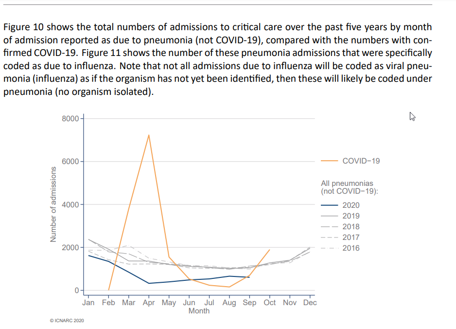

Understanding the Telegraph
There’s an article in the Telegraph titled: “Hospital intensive care no busier than normal, leaked documents show - even without Nightingales”
This has been shared on Twitter by some prominent users who were interviewed for the piece
The headline seems to suggest intensive care is in no different a place to where it would be any other winter. The article gives an impression of a “we’re making too big a fuss over this, so lockdown isn’t necessary” perspective.
I was surprised by this and wanted to read more, as this article doesn’t agree with my prior understanding of the situation. I know that in my hospital intensive care has been getting busier, I know that extra intensive care beds have been created that weren’t there this time last year.
So what are the Telegraph using to say that ICU is about the same as it always is this time of the year?
When talking about critical care capacity, the Telegraph talks percentages:
The telegraph talk about a leaked report they’ve seen, that allows them to say the following:
92.9% of critical care beds are currently occupied [in the North West] “In critical care around 18 per cent of beds are still unoccupied”
I don’t have access to the dataset the telegraph used, but on first glance percentages of beds being used can not show how busy a unit is over time, if we don’t know how many total beds are there and how that’s changed.
If an intensive care unit used to have 50 beds and now has 100, and used to have 40 patients and now has 80, then at both times it would be 80% occupied and have 20% spare capacity. But most people would consider an increase from 40 to 80 patients to count as getting busier.
I don’t know if any unit has expanded in size that level, I’ve exagerrated to make the point clearer. Lots of hospitals have expanded their intensive care capacity to some extent though. The Telegraph try to suggest that “no busier” isn’t due to extra capacity by saying “even without Nightingales” - but that would ignore any stretching of units that happened within normal hospitals over the summer.
Is Intensive Care Busier?
Unfortunately I can’t find any independent up to date (weekly/monthly) national stats on intensive care capacity. NHS England have paused the release of their usual monthly datasets on critical care capacity. ICNARC (the intensive care national audit centre) were the other group that I thought may have up to date stats released, but they seem to be releasing a COVID focused report, rather than one that shows how much total capacity we have.
What I could find though, was the ICNARC graph in the covid report showing the numbers of admissions to critical care with Pneumonia and COVID over the last 5 years. You can see the massive spike in April this year, where the amount of patients admitted with COVID-19 was around 4 times more than admissions with pneumonia in any of the last 5 years.
Looking at now (or at least October), we aren’t in nearly as bad a place as we were in April, but the intensive care admissions have risen dramatically since their low point in August. In October there were more admissions with COVID-19 than there were admissions with all other pneumonias combined at any year in the last 5 years. When looking at patients being admitted with lung infections, intensive care is busier than previous years.

Just because there are more admissions to critical care with chest infections this October, than there has been any October in the last 5 years, doesn’t automatically mean that all of intensive care is busier. Not if there was another part that was quieter but the Telegraph don’t provide any evidence to say that the rest of intensive care was quieter. Even if they did, that wouldn’t necessarily be a good thing, as it could mean patients are trying to avoid attending hospital when they should (and being at risk of dying at home of a treatable illness), or that planned procedures and operations can’t go ahead (when patients would often come to intensive care afterwards), presumably due to covid stresses on resources.
The fact there’s the same percentage capacity of spare beds doesn’t mean much if the numbers have been increased.
And Another Thing…
The Telegraph talks about CRITCON-PANDEMIC stages for intensive care units, a measure of how bad things are (like DEFCON).
CRITCON Stages:
146 units out of 222 are still at ‘Critcon 0’ - “business as usual” 29 units are at ‘Critcon 1’ - “a bad winter” 19 units are at ‘Critcon 2’ - “a medium surge” 0 units are at Critcon 3 (full stretch) or 4 (emergency)
They point out that the majority are at Critcon 0, the minority are in the low stages of 1 or 2, and no-one is higher than that.
But it does seem like they’re suggesting that these stages aren’t as big a deal as they are.
CRITCON is a scale to be used in events that threaten to overwhelm hospitals and healthcare systems. So any increase over level 0 is a marker that things are busier than a normal year.
Level One gets the title “Preparatory” in the scale. It’s where a hospital is ramping up capacity (increasing numbers of physical beds and equipment), and redeploying staff from other areas (putting non intensive care health professionals to work in intensive care). So in level 1 we’ve taken doctors, nurses, and other professionals away from their usual work, to look after this increased number of patients.
Level Two is “Sustained Surge”, which is described as “system at full stretch - in ventilator capacity and staffing” with resources (“oxygen”) becoming limited. So these units in Level Two, which according to the Telegraph looks to be just under 1/10 of all units, are at the point where they’re just about to run out of ventilators, and the supply of oxygen is getting tight.
At the point of Level Three, called “Super Surge”, resources are being overwhelmed, we’ve used up all spare capacity even when stretching resources further than they usually would go. By Level Four (Code Red) we’re at the point of regional or national emergency, where intensive care has been overwhelmed everywhere and some patients will not be able to get any intensive care treatment.
My reading of these levels is that anything above 0 is concerning, anything above usual care starts involving resources being thinly spread. Resources doesn’t just mean physical space and machines, it also means the amount of time that staff can focus on an individual patient and work to get them better. If an intensive care nurse usually has one patient on a ventilator, and in sustained surge finds themselves looking after 5 or 6, then these patients are only getting a fifth of their essential care.
The stages above 0 are something to be avoided, units entering them is a sign of real strain. We can’t follow the implication of the article that we should wait for more units to struggle until continuing with a lockdown, that just means more patients not receiving the usual standard of care.
And another thing…
Did we forget about the delays when it comes to COVID? That whole: It can take up to two weeks from being exposed to getting ill, it can take another two weeks from feeling ill to being really critically unwell, and then another two weeks (plus the rest) until you get better.
If people are unwell in hospital now and things are starting to strain, and more people catch the illness today, we won’t see them in hospital tomorrow. We’ll see them in two weeks time, at which point the folk who were critically unwell in hospital today will still be there, as it takes so long to get better.
The whole point of this article from the telegraph seems to be suggesting “ah things are alright, don’t intervene today”, which forgets the fact that even if that were the case today (which it isn’t), it wouldn’t be the case in two weeks.